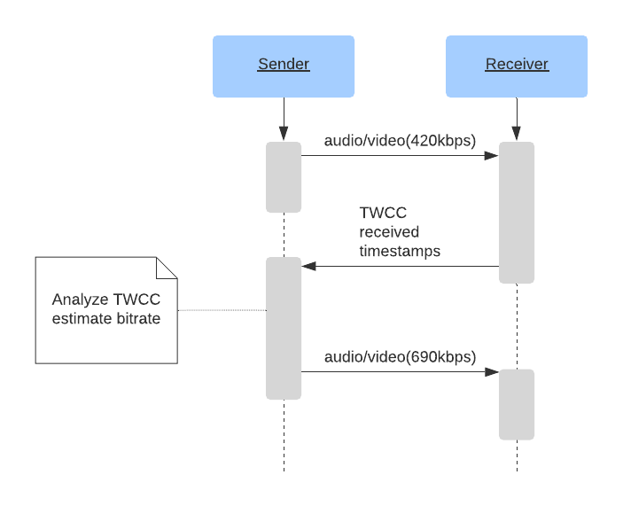

媒体通信
我可以从 WebRTC 的媒体通信中得到什么？
WebRTC 允许你发送和接收无限多条音频和视频流。你可以在通话期间随时添加和删除这些流。这些流可以全部独立，也可以捆绑在一起！你甚至可以将网络摄像头的音频和视频放到你桌面的视频中，然后将此视频以 feed 的形式发送出去。
WebRTC 协议与编解码器无关。底层传输支持所有格式的内容，即使是还不存在的格式！ 但是，你正与之通信的 WebRTC Agent 可能没有必要的工具来接受它。
WebRTC 针对动态网络状况也有对应的处理方案。在通话过程中，带宽可能会增加或减少。甚至可能突然间大量丢包。该协议对所有这类问题的处理都做了相应的设计。WebRTC 根据网络状况作出响应，并尝试利用可用资源为你提供最佳体验。
它是如何工作的？
WebRTC 使用RFC 1889中定义的两个既有协议 RTP 和 RTCP。
RTP（实时传输协议 /Real-time Transport Protocol）是承载媒体的协议。它为视频的实时传输而设计。它没有规定有关延迟或可靠性的任何规则，但是为你提供了实现这些规则的工具。RTP 提供了流的设计，因此你可以通过一个连接发布多个媒体源。它还为你提供了完善媒体传递途径所需的计时和排序信息。
RTCP（RTP 控制协议 /RTP Control Protocol）是用于传达有关呼叫的元数据的协议。其格式非常灵活，并允许你可以添加所需的任何元数据。这点被用来传达有关呼叫的统计信息。也是处理分组丢失和实现拥塞控制的必备特性。它为你提供了响应变化的网络状况所必需的双向通信能力。
延迟与质量
实时媒体就是要在延迟和质量之间进行权衡。你愿意忍受的延迟时间越长，可以预期的视频质量就越高。
现实世界的局限性
下面这些限制都是由现实世界的局限性引起的。它们都是你需要考虑的网络特性。
视频是复杂的
传输视频并不容易。要存储 30 分钟未经压缩的 720p 的 8-bit 视频，你需要大约 110GB。按照这个数据，4 人电话会议就开不成了。我们需要一种缩小容量的方法，而答案就是视频压缩。但是，这并非没有缺点。
视频 101
我们不会深入介绍视频压缩，只需要让大家足以理解为什么 RTP 是这么设计的。视频压缩会将视频编码为一种新格式，这样可以需要较少的 bit 数来表示同一视频。
有损和无损压缩
你可以将视频编码为无损（无信息丢失）或有损（信息可能丢失）压缩。由于无损编码需要将更多的数据发送到对端，这样会导致更高的流延迟和更多的丢包，因此 RTP 通常使用有损压缩，即使这样可能会导致视频质量不佳。
帧内和帧间压缩
视频压缩有两种类型。首先是帧内压缩。帧内压缩减少了用于描述单个视频帧的 bit 数。相同的技术被用来压缩静态图片，例如 JPEG 压缩方法。
第二种类型是帧间压缩。由于视频是由许多图片组成的，因此我们需要寻找无需将相同信息发送两次的方式。
帧间压缩
帧有三种类型：
- I 帧 - 一张完整的图片，无需任何其他内容即可解码。
- P 帧 - 一张图片的一部分，仅包含对之前图片的修改。
- B 帧 - 一张图片的一部分，包含对之前图片和将来图片的修改。
以下是对这三种类型帧的图解。

视频很脆弱
压缩后的视频是有状态的，（视频解码）非常依赖其上下文，这使得视频很难通过 Internet 进行传输。想像一下，如果 I 帧的一部分丢失了会怎样？这样 P 帧如何知道要修改的内容？ 随着视频压缩变得越来越复杂，这成为一个更大的问题。幸运的是，RTP 和 RTCP 对此都有解决方案。
RTP
Packet Format（包格式）
每个 RTP 数据包都具有以下结构：
0 1 2 3
0 1 2 3 4 5 6 7 8 9 0 1 2 3 4 5 6 7 8 9 0 1 2 3 4 5 6 7 8 9 0 1
+-+-+-+-+-+-+-+-+-+-+-+-+-+-+-+-+-+-+-+-+-+-+-+-+-+-+-+-+-+-+-+-+
|V=2|P|X| CC |M| PT | Sequence Number |
+-+-+-+-+-+-+-+-+-+-+-+-+-+-+-+-+-+-+-+-+-+-+-+-+-+-+-+-+-+-+-+-+
| Timestamp |
+-+-+-+-+-+-+-+-+-+-+-+-+-+-+-+-+-+-+-+-+-+-+-+-+-+-+-+-+-+-+-+-+
| Synchronization Source (SSRC) identifier |
+=+=+=+=+=+=+=+=+=+=+=+=+=+=+=+=+=+=+=+=+=+=+=+=+=+=+=+=+=+=+=+=+
| Contributing Source (CSRC) identifiers |
| .... |
+-+-+-+-+-+-+-+-+-+-+-+-+-+-+-+-+-+-+-+-+-+-+-+-+-+-+-+-+-+-+-+-+
| Payload |
+-+-+-+-+-+-+-+-+-+-+-+-+-+-+-+-+-+-+-+-+-+-+-+-+-+-+-+-+-+-+-+-+
Version (V)
Version 总是 2。
Padding (P)
Padding 是控制有效载荷是否具有填充值的布尔值。
有效负载的最后一个字节包含添加了多少填充字节的计数。
Extension (X)
如果设置的话，RTP 报头将有扩展段（可选）。这点将在下面更详细地描述。
CSRC count (CC)
在 SSRC 之后，有效负载之前的 CSRC 标识符的数量。
Marker (M)
标记位没有预设含义，用户可以根据自己的需求随意使用它。
在某些情况下，它是在用户讲话时设置的。它还通常用于标记关键帧。
Payload Type (PT)
Payload Type（负载类型）是此数据包所承载的编解码器的一个唯一标识符。
对于 WebRTC，Payload Type 是动态的。一个呼叫中的 VP8 的 PT 可能与另一个呼叫中的不同。呼叫中的 offerer 确定 Payload Type 到 Session Description（会话描述符）中的编解码器的映射。
Sequence Number
Sequence Number（序列号）用于对流中的数据包进行排序。每次发送数据包时，Sequence Number 都会增加 1。
RTP 被设计为可以在有损网络上使用。这为接收器提供了一种检测数据包何时丢失的方法。
Timestamp
此数据包的采样时刻。这不是全局时钟，而是在当前媒体流中所经过的时间。举例来说，如果多个 RTP 包都属于同一视频帧，那么它们可能具有相同的时间戳。
Synchronization Source (SSRC)
SSRC 是此流的唯一标识符。这使你可以在单个 RTP 流上传输多个媒体流。
Contributing Source (CSRC)
一个列表，用于表示哪些 SSRC 参与到了这个数据包中。
这通常用于语音指示器。假设在服务器端，你将多个音频源组合到一个单独的 RTP 流中。然后，你可以在此字段中表示 " 输入流 A 和 C 此时正在讲话 "。
Payload
实际有效负载数据。如果设置了填充（padding）标记，则可能以添加的填充字节数结尾。
Extensions（扩展）
RTCP
Packet Format
每个 RTCP 数据包都具有以下结构：
0 1 2 3
0 1 2 3 4 5 6 7 8 9 0 1 2 3 4 5 6 7 8 9 0 1 2 3 4 5 6 7 8 9 0 1
+-+-+-+-+-+-+-+-+-+-+-+-+-+-+-+-+-+-+-+-+-+-+-+-+-+-+-+-+-+-+-+-+
|V=2|P| RC | PT | length |
+-+-+-+-+-+-+-+-+-+-+-+-+-+-+-+-+-+-+-+-+-+-+-+-+-+-+-+-+-+-+-+-+
| Payload |
+-+-+-+-+-+-+-+-+-+-+-+-+-+-+-+-+-+-+-+-+-+-+-+-+-+-+-+-+-+-+-+-+
Version (V)
Version 总是 2。
Padding (P)
Padding 是控制有效载荷是否具有填充值的布尔值。
有效负载的最后一个字节包含添加了多少填充字节的计数。
Reception Report Count (RC)
此数据包中的报告数。单个 RTCP 数据包可以包含多个事件。
Packet Type (PT)
指示 RTCP 数据包类型的唯一标识符。WebRTC Agent 不需要支持所有这些类型，并且 Agent 之间的支持能力可以是不同的。下面这些是你可能经常看到的类型：
192- 完整的帧内请求（FIR）-193- 否定确认（NACK）200- 发送方报告201- 接收方报告205- 通用 RTP 反馈206- 有效负载特定反馈
这些分组类型的意义将在下面更详细地描述。
完整的帧内请求（FIR）和图片丢失指示（PLI）
FIR 和 PLI 消息的目的是类似的。这些消息都是向发送方请求一个完整的关键帧。
PLI 用于解码器得到了部分帧，但却无法解码的情况。
之所以会发生这种情况，是因为你有很多数据包丢失，或者解码器崩溃了。
根据RFC 5104，当数据包或帧丢失时，不应使用 FIR，那是 PLI 的任务。用 FIR 请求关键帧适用于丢包以外的其他原因（例如，当新成员进入视频会议时）。他们需要一个完整的关键帧才能开始对视频流进行解码，解码器将丢弃一些帧，直到关键帧到达为止。
对于接收方来说，在连接建立后立即请求一个完整的关键帧是个好主意，这可以最大程度地减少连接建立和在用户屏幕上显示图像之间的延迟。
PLI 数据包是 " 有效负载特定反馈 " 消息的组成部分。
在实践中，能够同时处理 PLI 和 FIR 数据包的软件在两种场景下的行为是相同的。它会向编码器发送信号以产生新的完整关键帧。
Negative ACKnowledgements（否定确认）
NACK 请求发送方重新发送单个 RTP 数据包。这通常是由于 RTP 数据包丢失而引起的，但是也可能由于延迟而发生。
与请求重新发送整个帧相比，NACK 的带宽使用效率要高得多。由于 RTP 将数据包分解成很小的块，因此你实际上只是在请求丢失的一个很小的部分。接收方使用 SSRC 和序列号制作 RTCP 消息。如果发送方没有可用于重新发送的 RTP 数据包，那么它只会忽略该消息。
Sender and Receiver Reports（发送方和接收方报告）
这些报告用于在 Agent 之间发送统计信息。它传达了实际接收到的和抖动的数据包数量。
这些报告可用于诊断以及控制拥塞。
RTP/RTCP 是如何协作解决问题的
RTP 和 RTCP 需要协同解决网络引起的所有问题。这些技术仍在不断进化中！
Forward Error Correction（前向纠错）
简称为 FEC。处理丢包的另一种方法。FEC 指的是发送方多次重复发送相同的数据，甚至是在接收方没有要求的情况下发送。这是在 RTP 协议层级完成的，甚至也可以在编解码器以下的层级完成。
在呼叫的数据丢包率比较稳定的情况下，作为延迟处理方案，FEC 比 NACK 好的多。对于 NACK，必须先请求，然后重新传输丢失的数据包，数据往返的时间对性能的影响可能是很明显的。
自适应比特率和带宽估计
正如搭建实时网络章节中讨论的那样，网络是不可预测且不可靠的。带宽的可用性在整个会话中可能会多次变化。 在一秒钟之内看到可用的带宽急剧变化（差别达到数量级），这样的情况并不少见。
这里的主要思路是根据预测的，当前的和将来的可用网络带宽来调整编码比特率。 这样可以确保传输质量最佳的视频和音频信号，并且不会因为网络拥塞而断开连接。 对网络行为建模并尝试对其进行预测的启发式方法称为带宽估计。
这里有很多细微的差别，因此，让我们来探索一下更多细节。
识别和传递网络状态
RTP/RTCP 可能运行在各种不同的网络上，因此，通讯中出现丢包是很常见的。建立在 UDP 传输协议之上，没有内置的丢包重传机制，更不用说处理拥塞控制了。
为了给用户提供最好的体验，WebRTC 必须评估网络路径的质量，并且随时适应网络质量的波动。要监控的关键特征包括： 带宽（在每个方向上，因为双向带宽可能是不对称的）、往返时间和抖动。它需要考虑数据包丢失，并随时传递这些属性特征的变化情况。
这些协议有两个主要目标：
- 评估网络支持的可用带宽（双向）
- 发送者和接收者之间的通信网络特性
RTP/RTCP 有三种不同的方法来解决这个问题。他们都有自己的优点和缺点， 总的来说，每一代都比其上一代有所改进。使用哪种实现方式主要取决于客户可用的软件堆栈和可用的基础库。
Receiver Reports / Sender Reports
第一种实现是一对接收者报告及其补充——发送者报告。这些 RTCP 消息在 RFC 3550 中定义，并且是 负责在端点之间传递网络状态。 Receiver Reports 侧重于 关于网络的通信质量（包括丢包、往返时间和抖动），可以配合其他算法，利用这些报告信息进行评估。
Sender / Receiver Reports（SR 和 RR）共同描绘了网络质量。他们是以每个 SSRC 为粒度按计划发送，作为评估可用带宽的输入数据。这些评估是由发送者在收到 RR 数据后做出的，其中包含 以下字段：
- Fraction Lost(丢包率) - 自上次接收者报告以来丢失了数据包的百分比。
- Cumulative Number of Packets Lost(累计丢包数) - 在整个通话过程中丢了多少包。
- Extended Highest Sequence Number Received(接收到的最高序列号扩展) - 接收到的最后一个序列号，以及它的重置次数。
- 到达间隔抖动（Interarrival Jitter） - 整个通话过程中的抖动滚动。（译注：RTP 数据包到达时间的统计方差的估计值，以时间戳为单位进行度量，并表示为无符号整数。）
- 上次发送方报告时间戳（Last Sender Report Timestamp） - 已知的最后一次的发送方报告的时间戳，用于往返时间的计算。
发送方和接收方报告（SR 和 RR）配合，可以计算往返时间。
发送方在 SR 中包含其本地时间 sendertime1。
当接收方获得 SR 数据包时，发回 RR。
除了其他一些信息，RR 还要包括刚从发送方接收到的 sendertime1。
在接收 SR 和发送 RR 之间，会有一个延迟。因此，RR 还包括 " 自上次发送方报告以来的延迟 " 时间 - DLSR（delay since last sender report）。
DLSR 用于在该过程的稍后阶段调整往返时间的估计。
一旦发送者接收到 RR，它就从当前时间 sendertime2 中减去 sendertime1 和 DLSR。
这个时间增量称为往返传播延迟或往返时间。
rtt（往返时间） = sendertime2 - sendertime1 - DLSR
换个简单的说法来解释，就是这样： - 我看了看表，向你发送了一条消息，说这是下午 4 点 20 分 42 秒 420 毫秒。 - 你再将相同的时间戳发回给我。 - （返回的消息中）还包括了从阅读我的消息到发回消息所花费的时间，例如 5 毫秒。 - 收到时间后，我会再次看时钟。 - 现在我的表是下午 4 点 20 分 42 秒 690 毫秒。 - 这意味着消息需要 265 毫秒（690-420-5）才能到达你，并返回到我。 - 因此，往返时间为 265 毫秒。
TMMBR，TMMBN，REMB 和 TWCC, 与 GCC 配合
Google Congestion Control (GCC)
Google 拥塞控制 (GCC) 算法（在draft-ietf-rmcat-gcc-02) 解决了带宽估计的挑战。 它与各种其他协议配合，以应对相应的通信需求。 因此，它非常适合在任一接收端（当使用 TMMBR/TMMBN 或 REMB 运行时）或发送端（当使用 TWCC 运行时）。
为了估算可用带宽，GCC 关注数据包丢失和帧到达时间的波动作为其两个主要指标。 它通过两个链接的控制器运行这些指标： 基于损失的 (loss-based) 控制器和基于延迟的 (delay-based) 控制器。
GCC 的第一个控制器是基于丢失的控制器，原理很简单：
- 如果丢包率超过 10%，带宽估计会降低
- 如果丢包率在 2-10% 之间，带宽估计保持不变
- 如果丢包率低于 2%，带宽估计会增加
频繁地进行丢包测量。 根据配对的通信协议，丢包可能是明确传达的（如 TWCC）或推断的（如 TMMBR/TMMBN 和 REMB）。 这些百分比是在大约一秒的时间窗口内评估的。
第二个控制器与基于丢失的控制器合作，并关注数据包的变化到达时间。这种基于延迟的控制器旨在识别网络链接何时变得越来越拥挤，甚至可能在丢包发生之前就降低带宽估计。理论上，路径上最繁忙的网络接口将继续将数据包排队直到接口耗尽其缓冲区内的容量。如果该接口继续接收超过它能够发送的流量，它将被迫丢弃缓冲空间中无法容纳的所有数据包。这种类型的数据包丢失对于低延迟 / 实时通信场景尤其具有破坏性，同时它也会降低该链路上所有通信的吞吐量，所以最好应该避免。因此，GCC 试图在丢包实际发生之前，弄清楚网络链接是否越来越大队列深度。如果它观察到，随着时间的推移排队延迟增加了，它将主动减少带宽使用。
为了实现这一点，GCC 尝试通过测量往返时间的微量增加，来推断队列深度的增加。 它记录帧的“到达间隔时间”，t(i) - t(i-1)：即两组数据包（通常是连续的视频帧）的到达时间差。这些数据包组经常
以固定的时间间隔出发（例如，对于 24 fps 的视频，每 1/24 秒）。 因此，测量到达间隔时间，就像记录第一个数据包组（即帧）的开始和下一个数据包组的第一帧之间的时间差一样简单。
在下图中，数据包间延迟增加的中位数为 +20 毫秒，这是一个明确的指标网络拥塞。

如果到达间隔时间随着时间的推移而增加，则假定连接网络接口上的队列深度增加并被认为是网络拥塞的证据。 （注意：GCC 足够聪明，可以控制这些测量以应对帧字节大小的波动。）GCC 使用 Kalman 滤波器改进其延迟测量，并在标记拥塞之前多次测量网络往返时间（及其变化）。可以将 GCC 的卡尔曼滤波器视为代替线性回归：即使在抖动将噪声添加到时序测量中时，也有助于做出准确的预测。在标记拥塞时，GCC 将降低可用比特率。或者，在稳定的网络条件下，它可以缓慢增加其带宽评估以测试更高的负载值。
TMMBR, TMMBN, and REMB
对于 TMMBR/TMMBN 和 REMB，接收方首先估计可用的入口带宽（使用 GCC 等协议），然后将这些带宽评估值传达给远程发送者。他们不需要交换有关丢包的详细信息或有关网络拥塞的其他质量（因为在接收端进行操作可以直接测量到达的间隔时间和丢包） 而是只交换带宽评估值本身：
- TMMBR（临时最大媒体码率请求） - 单个 SSRC 请求码率的尾数 / 指数。（译注：接收端当前带宽受限，告诉发送端控制码率。）
- TMMBN（临时最大媒体码率通知） - （发送端）通知（接收端）已经收到 TMMBR 的消息。
- REMB（接收方估计的最大码率） - 整个会话中请求码率的尾数 / 指数。
TMMBR 和 TMMBN 是先出现的，它们在RFC 5104中定义。REMB 是后来出现的，是在draft-alvestrand-rmcat-remb中提交的一个草案，但从未被标准化。
使用 REMB 的会话如下图所示：

这个方法在纸面上看起来效果很好。发送方从接收方接收估计值，然后将编码器比特率设置为接收到的值。啊哈！我们已经根据网络条件作出了调节。
然而，在实践中，REMB 方法有几个缺点。
首先就是编码器效率低下。当您为编码器设置比特率时，它不一定 输出您要求的确切比特率。编码可能会输出更多或更少的位，具体取决于 编码器设置和被编码的帧。
举例来说，x264 编码器，配置为 tune=zerolatency，跟指定的目标比特率相比，其输出可能会产生明显的偏离。下面是一种可能的场景：
- 假设我们一开始将比特率设置为 1000kbps。
- 由于没有很多高频特征值需要编码，编码器只能输出 700kbps。（亦称为：" 凝视一堵墙 "。）
- 我们再假设接收方获得了 700kbps 的视频，没有发生数据包丢失，然后它将应用 REMB 的规则 1，把输入比特率提升 8％。
- 接收方向发送方发送了一个 REMB 包，建议将输入比特率提高到 756kbps（700kbps * 1.08）。
- 发送方将编码器的比特率设置为 756kbps。
- 编码器输出更低的比特率。
- 这个过程会继续重复进行，这样，比特率会被降低到绝对最小值。
你可以看到，这会导致编码器多次触发参数调整；同时用户会惊讶的发现，虽然连接状况良好，但视频质量看起来却让人难以接受。
传输范围内的拥塞控制（TWCC）
Transport Wide Congestion Control 是 RTCP 网络状态的最新发展 沟通。 它定义在draft-holmer-rmcat-transport-wide-cc-extensions-01, 但一直未被标准化。
TWCC 使用了一个非常简单的原理：

使用 REMB，接收方以可用的下载比特率指示发送方。它使用关于推断的数据包丢失的精确测量和仅它具有的关于数据包间到达时间的数据。
TWCC 可以看作是 SR/RR 和 REMB 协议的混合方法。它将带宽估计带回发送方（类似于 SR/RR），但其带宽估计技术更类似于 REMB 生成。
使用 TWCC，接收方让发送方知道每个数据包的到达时间。这是足以让发送者测量数据包之间到达延迟的变化，以及识别哪些数据包丢失或到达太晚而不能提供音频 / 视频源。随着这些数据的频繁交换，发送方能够快速调整以适应不断变化的网络条件，并使用诸如 GCC 的算法改变其输出带宽。
发送者跟踪发送的数据包、它们的序列号、大小和时间戳。当发送方接收到来自接收方的 RTCP 消息时，它会将发送包间延迟与接收延迟进行比较。如果接收延迟增加，则表明网络拥塞，发送方必须采取纠正措施。
通过向发送者提供原始数据，TWCC 提供了实时网络状况的绝佳视图：
- 几乎是即时的丢包行为，具体到单个丢包
- 准确的发送比特率
- 准确的接收比特率
- 抖动测量
- 发送和接收数据包延迟之间的差异
- 描述网络如何容忍突发或稳定的带宽传输
TWCC 最重要的贡献之一是它为 WebRTC 开发人员提供的灵活性。通过将拥塞控制算法整合到发送端，它允许简单的客户端代码被广泛使用，并且随着时间的推移需要最少的增强。然后可以在它们直接控制的硬件上更快地迭代复杂的拥塞控制算法（如第 8 节中讨论的选择性转发单元）。对于浏览器和移动设备，这意味着这些客户端可以从算法增强中受益，而无需等待标准化或浏览器更新（这可能需要很长时间才能被广泛使用）。
生成带宽估计值
部署最多的实现是“A Google Congestion Control Algorithm for Real-Time Communication”，定义在 draft-alvestrand-rmcat-congestion。
GCC 有几种替代方案，例如